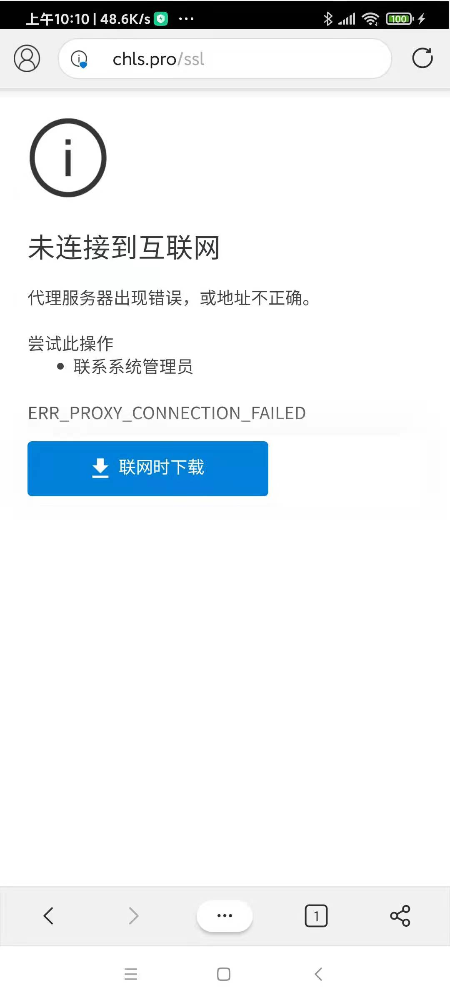

APP
安装app
def install_app_Android(self, item, packages=None):
appAccount = item[0]
appPackage = item[1]
appMainActivity = item[2]
apkFilePath = item[3]
if packages is None:
packages = self.get_packages()
if appPackage in packages:
logging.info("AppName {0} is alread installed".format(appAccount))
else:
logging.info("start to install app in {}".format(os.path.basename(self.arg_options.task)))
# show current adb command version, makesure is latest version
# os.system("adb --version")
# Android Debug Bridge version 1.0.41
# Version 30.0.5-6877874
# Installed as /Users/limao/dev/tools/android/adb/platform-tools/adb
# isUseShortCmd = True # use short command to try to avoid install stuck
isUseShortCmd = False # use default long abd install command
if isUseShortCmd:
# sometime will stuck, reason: maybe command length too large, > 255?
# so copy to temp folder -> to reduce command string length
tmpFolder = tempfile.TemporaryDirectory()
logging.info("tmpFolder=%s", tmpFolder)
# tmpFolder=<TemporaryDirectory '/var/folders/gt/5868sbcd1jq4rxvryqhy2_1sz8n0s3/T/tmp_yk15rlz'>
tmpFolderName = tmpFolder.name
logging.info("tmpFolderName=%s", tmpFolderName)
# tmpFolderName=/var/folders/gt/5868sbcd1jq4rxvryqhy2_1sz8n0s3/T/tmp_yk15rlz
apkFileName = os.path.basename(apkFilePath)
logging.info("apkFileName=%s", apkFileName)
# apkFileName=20201202_fengyun_0192LeiMoChuanShuo_gameApp_Android_0.apk
tmpApkFile = os.path.join(tmpFolderName, apkFileName)
logging.info("tmpApkFile=%s", tmpApkFile)
# tmpApkFile=/var/folders/gt/5868sbcd1jq4rxvryqhy2_1sz8n0s3/T/tmp_yk15rlz/20201202_fengyun_0192LeiMoChuanShuo_gameApp_Android_0.apk
logging.info("Copy %s to tmp file %s", apkFilePath, tmpApkFile)
# Copy /Users/limao/dev/xxx/crawler/appAutoCrawler/AppCrawler/task/20201202_fengyun_0192LeiMoChuanShuo/20201202_fengyun_0192LeiMoChuanShuo_gameApp_Android/20201202_fengyun_0192LeiMoChuanShuo_gameApp_Android_0.apk to tmp file /var/folders/gt/5868sbcd1jq4rxvryqhy2_1sz8n0s3/T/tmp_yk15rlz/20201202_fengyun_0192LeiMoChuanShuo_gameApp_Android_0.apk
copyfile(apkFilePath, tmpApkFile)
# copy2(apkFilePath, tmpFolderName)
curApkFile = tmpApkFile
else:
curApkFile = apkFilePath
# os.system("adb -s {0} install {1}".format(self.device, apkFilePath))
# show file size
fileSizeInt = os.path.getsize(curApkFile) # 259106541
fileSizeStr = CommonUtils.formatSize(fileSizeInt) # '247.1MB'
logging.info("file size: %s", fileSizeStr) # file size: 247.1MB
# adbInstallCmd = "adb -s {0} install -r {1}".format(self.device, tmpApkFile)
# adbInstallCmd = "adb -s {0} install -r {1}".format(self.device, apkFilePath)
# installPara = " "
# installPara = "-r"
installPara = "-r -f"
adbInstallCmd = "adb -s {0} install {1} {2}".format(self.device, installPara, curApkFile)
# adbInstallCmd = "adb shell pm install -s {0} {1}".format(self.device, curApkFile)
# adbInstallCmd = "adb shell pm install -s {0} -r {1}".format(self.device, curApkFile)
# adbInstallCmd = "adb shell pm install -s {0} -f {1}".format(self.device, curApkFile)
# adb -s hmucaei75ptk7szs install -r /var/folders/gt/5868sbcd1jq4rxvryqhy2_1sz8n0s3/T/tmpq3ypjfgd/20201202_fengyun_0192LeiMoChuanShuo_gameApp_Android_0.apk
# length=243 command:
# adb -s hmucaei75ptk7szs install -r /Users/limao/dev/xxx/crawler/appAutoCrawler/AppCrawler/task/20201202_fengyun_0192LeiMoChuanShuo/20201202_fengyun_0192LeiMoChuanShuo_gameApp_Android/20201202_fengyun_0192LeiMoChuanShuo_gameApp_Android_0.apk
# 'adb -s hmucaei75ptk7szs install -r -f /Users/limao/dev/xxx/crawler/appAutoCrawler/AppCrawler/task/20201203_fengyun_0004TiTangMeng/20201203_fengyun_0004TiTangMeng_gameApp_Android/20201203_fengyun_0004TiTangMeng_gameApp_Android_0.apk'
logging.info("Run length=%d, command: %s", len(adbInstallCmd), adbInstallCmd)
# Run length=153, command: adb -s hmucaei75ptk7szs install -r /var/folders/gt/5868sbcd1jq4rxvryqhy2_1sz8n0s3/T/tmpq3ypjfgd/20201202_fengyun_0192LeiMoChuanShuo_gameApp_Android_0.apk
os.system(adbInstallCmd)
调用：
if self.isAndroid:
return self.install_app_Android(item, packages)
启动app
对于app：
- 五子棋经典版
- 包名：
com.fingertip.fivechess.mi - 主页面：
.StartAct
- 包名：
启动代码：
appPackage = "com.fingertip.fivechess.mi"
appActivity = ".StartAct"
self.driver.app_start(appPackage, activity=appActivity, stop=True)
卸载app
def uninstallApp_Android(self, item):
# 卸载安装包
appPackage = item[1]
adbUninstallCmd = "adb -s %s uninstall %s" % (self.device, appPackage)
logging.info(adbUninstallCmd)
os.system(adbUninstallCmd)
logging.info("Uninstalled Android app %s", appPackage)
调用：
if self.isAndroid:
self.uninstallApp_Android(item)
获取app信息
获取当前正在运行的app的包名和activity
def get_PackageActivity_Android(self):
# adb直接获取当前活跃app及activity
package, activity = "",""
cmds = ['dumpsys activity |grep {}'.format(item) for item in ['mFocusedActivity','mResumedActivity']]
for cmd in cmds:
output = self.driver.shell(cmd).output
result = re.search("u0(.*?)/", output)
package = result.group(1).strip() if result else ""
result = re.search("/(.*?)\s", output)
activity = result.group(1).strip() if result else ""
if package and activity:
return package, activity
return package, activity
调用：
package, activity = get_PackageActivity_Android()
举例：获取几个浏览器app的信息
可以用uiautomator2的app_current()
比如，代码：
curApp = d.app_current()
print("curApp=%s" % curApp)
输出：
- 小米 内置浏览器
- 图
- 信息
{'package': 'com.android.browser', 'activity': '.BrowserActivity', 'pid': 20194}
- 图
- Edge
- 图
- 
- 信息
curApp={'package': 'com.microsoft.emmx', 'activity': 'org.chromium.chrome.browser.ChromeTabbedActivity', 'pid': 21340}
- 图
- Firefox
- 图
- 信息
curApp={'package': 'org.mozilla.firefox', 'activity': 'org.mozilla.fenix.HomeActivity', 'pid': 21817}
- 图
- UC浏览器
- 图
- 信息
curApp={'package': 'com.UCMobile', 'activity': 'com.uc.browser.InnerUCMobile', 'pid': 22173}
- 图
- QQ浏览器
- 图
- 信息
curApp={'package': 'com.tencent.mtt', 'activity': '.MainActivity', 'pid': 24304}
- 图
相关辅助信息
获取当前安卓手机中已安装的app的包名等信息
可以通过几种方式：
- 手动点击和查看应用信息
- 用uiautomator2获取当前运行的app的信息
- 用weditor查看当前界面中app某元素的属性中的package值
- 用adb查看
adb shell pm list packages
获得app的包名信息。
比如：
各种浏览器app的包名：
- 小米的 内置浏览器：
com.android.browser - Edge：
com.microsoft.emmx - Firefox：
org.mozilla.firefox - UC浏览器：
com.UCMobile - QQ浏览器：
com.tencent.mtt